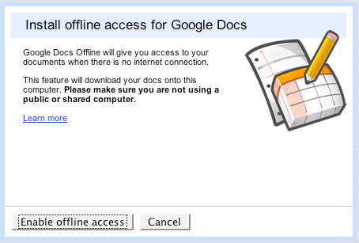
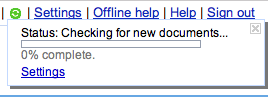
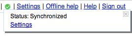
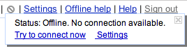
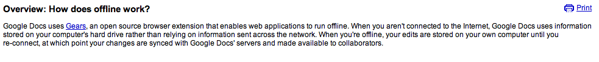

Gears for Web Users
How do I know if Gears is installed on a computer I am using?
How do I install Gears on another Mozilla based browser?
How do I run Gears on my 64-bit system?
How do I uninstall Gears?
Does Gears make any application work offline?
Why do I see a dialog asking if I want to allow a website to use Gears?
Getting Started
How do I contribute to Gears?
What is the status of Gears?
Does Gears automatically make my web application work offline?
What browsers and operating systems are supported by Gears?
Do I need a license to use Gears?
How do I build an application with Gears?
I have a great idea for Gears. Whom should I contact?
Developing With Gears
Is there a tool to interactively manage and query Gears' SQLite database tables?
How do I delete databases that were created from the Gears API?
How do I make JavaScript source code available to a child WorkerPool during initialization?
If I have two applications on separate ports, will they have the same LocalServer and Database files?
What is a cross-origin worker? What is it useful for? How do I use it?
Do I need to protect from multiple workers editing the database at once?
Does LocalServer store URL parameters?
How do I 'offline' a cross-origin resource?
Is there a tool to interactively manage and query Gears' LocalServer?
Do WorkerPool workers have access to the DOM document object?
Is there an isOnline function in Gears to check whether the application is online? Do you plan to have one? Can you provide code for offline detection?
Does Gears automatically make my web application work offline?
Gears lets my web application work offline, right? How do I do that?
Gears lets my web application store data on the user's computer, right? How do I do that?
Gears lets my web application run code in the background, right? How do I do that?
What does Gears require to be compatible with my Linux system?
Where are Gears files stored?
Best Practices
Best Practices for Offline Architectures
Best Practices for Online/Offline Detection
Best Practices for Gears Permissioning
Best Practices for Installation and Detection
Best Practices for Using LocalServer With Web Applications Spread Across Different Hosts
Best Practices for Database Performance and Reliability
Best Practices for Offline User Interfaces
Best Practices for Maintainable Workers
Best Practices for Choosing Names for Databases and LocalServers
Best Practices for Storing Data on Users' Machines
Best Practices for Desktop Shortcuts
Best Practices for Versioning Database Schema
Best Practices for LocalServer
Best Practices for Syncing
Best Practices for Giving Web Applications Similar Features to Desktop Applications
Articles And Tutorials
Taking Web Applications Offline with Gears
Using Google Base and Gears for a Performant, Offline Experience
Gears for Web Users
Listed below are several possible causes for the connection error you're receiving. Please determine which of these causes may be applicable to you and follow the instructions to resolve the problem.
-
Your firewall, anti-virus software, or proxy is preventing the program from accessing the Internet. In this case, you need to add it to your security software's exceptions list. If you're using Windows firewall, you can add this program by following these steps:
- Click "Start" in your Windows Taskbar and choose "Control Panel" > "Windows Firewall."
- Select the "Exceptions" tab.
- Click the "Add Program" button.
- Click "Browse" and select "My Computer" from the left side of the window.
- Select "Local Disk (C:)" and click "Open."
- Double-click "Program Files" > "Google" > "Common."
- Select the folder with the highest number and open it.
- Choose the file "googleupdate.exe."
- Open "Documents and Settings."
- Open the folder with your username.
- Open "Local Settings" > "Application Data" > "Google" > "Update."
- Select the folder with the highest number and open it.
- Choose the file "googleupdate.exe."
If you're using other firewall software, please visit that program's website for specific instructions to add applications to the exceptions list.
- You may not have the latest updates for Windows XP. If you're not currently running Windows XP Service Pack 2, please try upgrading Windows.
- You’re on an authenticated proxy server that isn't supported. Currently, we support the Negotiate authentication scheme. This includes both Kerberos and NTLM, depending on what is available. Additionally, proxies using "integrated authentication" are supported, provided that the current user is authorized to go through that proxy. Please determine if you're on a supported proxy server.
-
Your computer's Background Intelligent Transfer Service (BITS) isn't starting properly. If this is the case, you may want to verify that BITS is correctly configured. To ensure that BITS is enabled, please follow these steps:
- Click the "Start" button in your Windows taskbar and select "Settings" > "Control Panel" > "Administrative Tools" > "Services."
- Select "Background Intelligent Transfer Service" from the list.
- Right-click “Background Intelligent Transfer Service” and choose "Properties" from the menu.
- From the "General" tab verify that the "Startup" type is set to either "Automatic" or "Manual." Make sure this setting is not "Disabled."
If you continue to have difficulties with BITS, make sure you have write access to the following folder:
C:\Documents and Settings\All Users\Application Data\Microsoft\Network\Downloader\
To determine if you have write access, right-click the folder and choose "Properties." If you see an empty box next to "Read-only" in the "General tab," you do have write access. If you see a checkmark or a green box, click the box until it's empty and click "OK." If you're unable to click the box, please speak with your system administrator.
Occasionally you may wish to know if Gears is installed on a particular computer. For example, you may wish to know if Gears is installed on a computer at an internet cafe, prior to logging in with any sensitive information. Currently, there are two ways to accomplish this:
- Visit the page http://gears.google.com/. That page will clearly tell you whether Gears is installed or not.
- Attempt to access the Gears settings dialog, which is available from the browser's Tools menu if Gears is installed.
- Check the computer directly:
-
Windows XP or Vista
Open Add or Remove Programs (on XP) or Programs and Features (on Vista) from the Windows Control Panel. If Gears is not listed, then Gears is not installed.
-
Mac OS X or Linux
In Firefox, select Tools > Extensions (Firefox 1.x) or Tools > Add-ons (Firefox 2.0+) from the menu. If Gears is not listed, then Gears is not installed. -
Windows Mobile
If your particular phone supports it, you can access the list of installed programs by selecting Remove Programs from the Settings page. If Gears is not listed, then Gears is not installed.
There are 3 steps:
-
Go to the install directory of Gears:
Mac OS X - ~/Library/Application Support/Firefox/Profiles/<yourprofile>/extensions/{000a9d1c-beef-4f90-9363-039d445309b8}
Windows - C:\Program Files\Google\Gears\Firefox
Linux - ./mozilla/firefox/<yourprofile>/extensions/{000a9d1c-beef-4f90-9363-039d445309b8} -
Modify the install.rdf file:
- Do a search on any search engine for the GUID of the Mozilla variant you are using. The example below uses Flock's
-
Add this to your install.rdf file under the last </em:targetApplication> (note: id is the GUID):
<em:targetApplication> <Description> <em:id>{a463f10c-3994-11da-9945-000d60ca027b}</em:id> <em:maxVersion>6.02</em:maxVersion> <em:minVersion>0.2</em:minVersion> </Description> </em:targetApplication>
- Zip up the contents of the directory, rename the .ZIP to .XPI, drag the .XPI into your Mozilla variant.
There are two ways to do so.
- A patch submitted by a user.
- A plugin called nspluginwrapper to use 32-bit browser plugins with x86_64 browsers.
Since Gears allows web applications to write to your computer, Gears wants to be sure that the website has your permission to do so. You will see this dialog ever time the website tries to use Gears. If you trust the website and always want to permit it to use Gears, then check "Remember my decision for this site" and click Allow.
If you visit a new site that also wants to use Gears, you will see the message and can choose to give the new site permission or not.
Getting Started
Gears is an open source browser extension that lets developers create web applications that can run offline. Gears provides three key features:
- A local server, to cache and serve application resources (HTML, JavaScript, images, etc.) without needing to contact a server
- A database, to store and access data from within the browser
- A worker thread pool, to make web applications more responsive by performing expensive operations in the background
Gears is currently an early-access developers' release. It is not yet intended for use by real users in production applications at this time.
If you're a developer interested in using Gears with your application, visit the Gears Developer Page.
If you wish to install Gears on your computer, visit the Gears Home Page. Please note, however, that Gears is not yet intended for general use.
Go to the Google Code Project home for Gears. There is also a wiki document that explains how to contribute to Gears.
Gears is currently a beta product; moreover, it is currently considered to be a developer-only release. When the developer community has had a chance to examine, critique, and improve Gears, a final version suitable for use with production applications will be made available.
Gears is open source software, licensed under the New BSD license. Generally speaking, this license allows you to embed the Gears runtime or API in your software, without restriction. You should, of course, consult a lawyer about licensing issues before choosing to embed Gears in your software. There is no restriction on web applications which make use of Gears installations on users' computers.
Google is working with a variety of partners to make Gears widely available, and easy for developers to use.
For more information, visit the Gears Developers' Site.
Gears extends browsers by making new APIs available to JavaScript code. Like all APIs, they must be used explicitly. To take advantage of the offline features provided by Gears, you'll need to add or change code in your web application.
There are three core modules provided by Gears: a LocalServer for storing and accessing application pages offline, a Database for storing and accessing application data on the user's computer, and a WorkerPool for performing long-running tasks (such as the code that synchronizes data between your server and users' computers). For more information, follow the links.
A Gears Tutorial is available that illustrates the basic concepts. You may also find the Gears sample applicationsuseful. Source code for these samples can be downloaded in a zip file found on the same page.
Gears works on the following browsers:
- Apple Mac OS X (10.2 or higher)
- Firefox 1.5 or higher
- Linux (Requirements)
- Firefox 1.5 or higher
- Microsoft Windows (XP or higher)
- Firefox 1.5 or higher
- Internet Explorer 6 or higher
- Microsoft Windows Mobile (5 or higher)
- Internet Explorer 4.01 or higher
- The following devices are not supported
- Samsung i320 and i320N
- Orange SPV C600
- Motorola Q
Additionally, the team is working on supporting Safari on Mac OS X in a future release.
Gears is open source software, licensed under the New BSD license . Generally speaking, this license is very permissive. You should, of course, always consult an attorney if you have any questions about software licensing.
There are generally two ways to use Gears: by embedding the API or runtime software in an application you distribute to end users, or by writing a web application which makes use of installations of Gears on end-users' computers.
The New BSD license allows you to embed the Gears runtime or API in your software, with very minimal restrictions. There are no restrictions on web applications which make use of Gears installations on users' computers.
Enhancing your web application with offline functionality can be challenging at first. Here are some resources to help you get started:
- The Gears Tutorial will walk you through the process of building a very basic, static application.
- The Gears Samples demonstrate how to use each of the core APIs included in Gears, with source code.
- Read Choosing an Offline Application Architecture to learn about design decisions you may encounter.
- When you're ready to start debugging, check out the debugging tools .
If those resources don't answer your question, you can also contact other Gears developers over at the Gears Discussion Group .
We'd love to hear your feedback and suggestions! Gears is open source software, so you should feel free to join our community. If you have a cool new idea you'd like to discuss, you should join our Google Group and post your comment there.
The Gears discussion group is intended for all topics, so don't be shy! You can post there whether your idea is about an application you'd like to build, or an enhancement or feature you'd like to see in Gears. Perhaps most importantly, you can also post there if you're having problems using Gears in an application you're building. The Gears discussion group is an open forum. Developers help each other, but the group also includes Google employees working on Gears who post regularly.
If you're interested in obtaining the source code for Gears and making some enhancements of your own, you should also visit the Gears Contributors Site.
Developing With Gears
No. Gears LocalServer is simply a static content cache that intercepts URL requests to static content and serves them locally. The LocalServer does not provide the capability to interpret any server-side scripting.
Yes. The Database Query Tool allows developers to interface with SQLite interactively via SQL commands. It can be downloaded at http://code.google.com/apis/gears/tools.html. Simply copy the "dbquery.html" file to your server directory and visit the URL in your browser, and you can start issuing SQL commands to the embedded SQLite. There is also a similar third party tool, called Gears In Motion which is very good.
If you desire to check the contents of localserver.db (the database for LocalServer) then it is suggested that you use a SQLite management client. A list of them can be found here.
The Gears API does not provide a programmatic way to delete an existing database. Consider the following code, which creates a Gears Database:
db = google.gears.factory.create('beta.database');
db.open('mydb');
Databases created with code such as this can only be explicitly removed from your local machine by physically deleting the corresponding database file generated for the browser. Gears Database files reside in the Gears data directory associated with the browser. The specific path to this directory depends on your browser and the underlying operating system. The Gears data directories for common configurations are listed in http://code.google.com/apis/gears/api_database.html#directories.
The physical database file resides below the Gears data directory, according to this format:
[path]/[application url]/http_[port number]/[db name]#database
Since a Gears WorkerPool worker has no access to the address space of its parent worker, all source code must be explicitly passed in during child worker initialization as such -
childCode = '......'; /* JavaScript code as string */ childId = workerPool.createWorker(childCode);
The challenge lies in creating a string that encapsulates all the JavaScript codes that will be required by the child worker, and there are three ways to do this:
-
You can write out the entire code as a string to be passed in. For example:
childCode = 'function square(num) { return num*num; }'; -
You can wrap the code into a single function and use String() to flatten the function object into a string. For example:
function square(num) { return num * num; } childCode = String(square); -
You can retrieve it as a file string through an AJAX invocation (since local file reading is not allowed in JavaScript). For example:
/* XMLHttpRequestObject is the XHR object of your browser */ XMLHttpRequestObject.open("GET", 'square.js'); XMLHttpRequestObject.onreadystatechange = function() { if (XMLHttpRequestObject.readyState == 4 && XMLHttpRequestObject.status == 200) { childCode = XMLHttpRequestObject.responseText; } }
No. Separate storages are made for separate domains. Gears looks at the protocol + host + port to determine domains. A different port would be a different domain.
A cross-origin worker is WorkerPool worker created in a JavaScript file on a domain and has been initialized to run JavaScript code on a cross-origin server.
A cross-origin worker is useful because it is a secure solution to the cross-origin restriction policy of the browser. It allows you to make a request to a cross-origin server, even though the browser usually restricts this.
What can it be used for?
- Expose a service to users which was previously unreachable with an XMLHTTPRequest, due to cross-origin restrictions. By using cross-origin workers, you could make a web service API accessible to users' workers by putting a JavaScript worker file on your domain.
- Offline resources that are on another domain. For instance, say you have a photo site and you have a separate server for the pictures. If you wanted to enable Gears offline support, you would have to do a store.capture on them which would fail due to cross-origin restrictions. However, if you had a JavaScript file on the other origin which called store.capture, then you could initiate a worker on that file and it would be successful.
Example
Take a cross-origin resource offline with a cross-origin worker.
----cache_cross_origin_resource.html----
<script type="text/javascript" src="gears_init.js">
</script><script type="text/javascript">
// Create the workerpool
var workerPool = google.gears.factory.create('beta.workerpool');
// Set the message handler for when a worker sends a message
workerPool.onmessage = function(a, b, message) {
alert('Received message from worker ' + message.sender + ': ' + message.text);
};
// Create a worker from a JavaScript file on another origin
var childWorkerId = workerPool.createWorkerFromUrl('http://www.crossorigin.com/worker.js');
// Send a message to the worker. The worker's onmessage handler in worker.js will decide what to do with this
workerPool.sendMessage('crossOriginResource.html', childWorkerId);
</script>
----worker.js----
// Setup the WorkerPool
var wp = google.gears.workerPool;
// Allow a cross-origin script to run this
wp.allowCrossOrigin();
wp.onmessage = function(a,b,messageObject) {
// Ignore messages from unexpected origins
if(messageObject.origin == 'http://www.expectedorigin.com') {
// Create LocalServer
var localServer = google.gears.factory.create('beta.localserver');
// Create ResourceStore (Could also use ManagedResourceStore)
var store = localServer.createStore('Cross_Origin_Store');
// We are capturing the filename sent to us by the
// WorkerPool (crossOriginResource.html)
var fileToCapture = messageObject.text;
// Capture the file
store.capture(fileToCapture, function(url, success, captureId){
// When capture finishes, let the WorkerPool know the status
// This will cause workerPool.onmessage to alert the message received
wp.sendMessage(url + ' captured ' + (success ? 'succeeded' : 'failed'), messageObject.sender);
});
}
}
No. SQLite is thread-safe. However, if multiple workers attempt to access the database at once then some requests might fail. It is up to the application to have workers retry requests upon failure.
Yes. If you use a ResourceStore or a ManagedResourceStore and you store a URL with parameters then whatever was captured for that URL will be served back when that URL is requested. Ex:
store.capture('foobar.html?foo=1&bar=2');
When the browser requests foobar.html?foo=1&bar=2 it will be served the stored page, but not when it requests foobar.html.
First, read an article on the dangers of cross-origin scripting.
After understanding the security risks, here are two potential solutions:
(1) Use Gears' cross-origin workers
(2) Use cross-origin proxying
This is a safer alternative and therefore the suggested one. However, you must have access to put Javascript on any origins you wish to use. If you are trying to grab resources from an origin you do not control, use (2). However, be warned that this is unsafe and can expose you to attacks.
Say we have two origins, http://www.foo.com/ and http://www.bar.com/ with the style.css file on bar.com. What you do is create a WorkerPool on foo.com which does a createWorkerFromUrl. The URL it will create it from is a Javascript worker file that you have placed on bar.com.
The worker file on bar.com will then create a LocalServer and ResourceStore, then capture style.css.
Here is example code:
<script type="text/javascript" src="gears_init.js"></script>
<script type="text/javascript">
var workerPool = google.gears.factory.create('beta.workerpool', '1.1');
workerPool.onmessage = function(a, b, message) {
alert('Received message from worker ' + message.sender + ': ' + message.text);
};
var childWorkerId = workerPool.createWorkerFromUrl('http://www.bar.com/worker.js');
workerPool.sendMessage('', childWorkerId);
</script>
worker.js (this origin is http://www.bar.com/)
var wp = google.gears.workerPool;
wp.allowCrossOrigin();
wp.onmessage = function(a, b, message) {
localServer = google.gears.factory.create('beta.localserver', '1.1');
var store = localServer.createStore("Test_Store");
store.capture("style.css", function(){
wp.sendMessage("Captured!", message.sender);
});
}
For ease of reading, the try catch blocks that you should be using are left out! Don't forget them or to make sure the user has Gears installed.
Solution (2)
Be sure you understand the security risks of cross-origin proxying!
Use a PHP file that you store on the origin you are grabbing resources with to echo back the output of a resource from another origin. Then, to 'offline' this data, use resource store to store the PHP file with the exact parameters sent to it.
An example would be if I am on http://www.foo.com/ and I have a CSS located at http://www.bar.com/style.css. I would then tell my ResourceStore to pull down the URL http://www.foo.com/php_proxy.php?url=http://www.bar.com/style.css.php_proxy.php. The php_proxy would take the input url and do an HTTP request for that resource and echo it back as an image.
Here is what the code for php_proxy.php would look like:
<?php
header("Content-Type: text/css");
$base_url = $_GET['url'];
$ch = curl_init();
curl_setopt($ch, CURLOPT_URL, $base_url);
curl_setopt($ch, CURLOPT_RETURNTRANSFER, 1 );
curl_setopt($ch, CURLOPT_FOLLOWLOCATION, 1);
curl_setopt($ch, CURLOPT_HEADER, false);
echo( curl_exec($ch) );
?>
Then, in my HTML instead of:
<link rel="stylesheet" type="text/css" media="print" href="http://www.bar.com/style.css"/>I would use:
<link rel="stylesheet" type="text/css" media="print" href="http://www.foo.com/php_proxy.php?url=http://www.bar.com/style.css" />The last step is to have the ResourceStore grab http://www.foo.com/php_proxy.php?url=http://www.bar.com/style.css
If you've been wondering how to manage the stores and resources in Gears while developing, here's a solution. A script has been written which lets you add/remove stores, and the resources inside of them.
Limitations:
- Can only add/remove from domains the script is located on
- Must add a symlink in your profile directory
(Mac/Linux) How to use it:
- Navigate to your Gears directory.
-
Create a symlink:
ln localserver.db <domain>/http_80/localserver#database
An example would beln localserver.db www.google.com/http_80/localserver#database
- Upload the LocalServer inspector script to the domain you want to edit. Don't forget to put gears_init.js there as well.
- Navigate your browser to the location of the LocalServer inspector script.
(Windows) How to use it:
There is no utility built in to Windows to create a hard link (the equivalent of Mac/Linux symlink). There is an article that talks about making hard links. A simple utility is Hard Link Magic.
Use a hard link utility to connect the localserver.db file located in your Gears directory to a new file, <gears directory>/<domain>/http_80/localserver#database.
Follow steps 3 & 4 of the Mac/Linux section.
How it works:The file localserver.db, located in your Gears directory, is an SQLite database file that keeps track of all stores and resources on all domains in your Gears LocalServer. To prevent different domains from editing each other's offline data, this file is protected from being accessed in Gears code.
By creating a symlink to that file in your domain, it is like putting the localserver.db file in that folder. The script then opens that database and queries it for the stores and databases.
Troubleshooting:
If you received the "File exists" error while trying to create the symlink or there is an error when you open the LocalServer inspector tool, then delete the file <GearsDirectory>/<domain>/http_80/localserver#database and recreate the symlink.
No, there isn't an isOnline function in Gears at this time. And currently, there are no plans to implement it.
There are 2 reasons why we haven't implemented it yet:
-
There are multiple definitions of the application being 'offline'. The reason could be any of these:
- The browser has the 'work offline' flag set
- The network cable is unplugged
- The VPN is down
- DNS is down
- The server you are trying to reach is down
- The server has a bug and cannot process your request
-
We don't want users to neglect syncing reliability.
The popular suggestion to implement isOnline has been to make a periodic XMLHttpRequest to a resource, whose success/failure would designate the application being on/offline. The problem with this is that you cannot assume that when a ping succeeds you can start syncing and be guaranteed that that you are online. For example, if isOnline() returns true and you start sending sync updates, something could happen in the connection between the user and the server and these syncs would be permanently lost - meanwhile the application still thinks it is online.
So instead what we encourage people to do is to queue all updates locally in the database module, and then try and send them to their server separately. If the update succeeds, remove them from the database. If the update fails for any reason, try again next time. In that way, you're always ready for the server to go down at any time and you never lose anything.
Sample Code for periodic XMLHttpRequests - uses Gears v0.2+ HTTPRequest
Here is some sample code that makes use of Gears' HTTPRequest module to change the UI of an application - let the user know when they are on/offline. It requires gears_init.js to be in the same directory.
<div id="serverStatus"></div>
<div id="pings"></div>
<script src="gears_init.js"></script>
<script type="text/javascript" charset="utf-8">
var numPings = 0;
var request = google.gears.factory.create('beta.httprequest');
var TIME_BETWEEN_PINGS = 3*1000;
var PING_TIMEOUT_SECONDS = 1*1000;
function pingSuccess() {
if(request.responseText != "" && request.responseText.indexOf("404 Page not found") == -1){
document.getElementById('serverStatus').innerHTML = "[Server Accessible]";
} else {
document.getElementById('serverStatus').innerHTML = "[Server Inaccessible]";
}
}
function isServerAvailable() {
var resource_to_test = "FAQs_to_write.txt";
resource_to_test += "?q=" + Math.floor(Math.random() * 100000);
request.open('GET', resource_to_test);
window.setTimeout("pingSuccess()",PING_TIMEOUT_SECONDS);
request.onreadystatechange = function() {
if (request.readyState == 4) {
numPings++;
document.getElementById('pings').innerHTML = "Number of pings: " + numPings;
}
};
request.send();
window.setTimeout("isServerAvailable()",TIME_BETWEEN_PINGS);
}
isServerAvailable();
</script>
Be aware that the resource_to_test must be a file located on the same domain this code is running on. Also note that in the pingSuccess function, there is a test for a page returning "404 Page not found". Different domains will send the user a different 404 error, so please be aware of what check is correct for your domain.
Sample Code for browser being offline
To check if the user has manually told the browser to work offline, use this:
alert(navigator.onLine);
Note: This works on IE and Firefox
Gears extends browsers by making new APIs available to JavaScript code. Like all APIs, they must be used explicitly. To take advantage of the offline features provided by Gears, you'll need to add or change code in your web application.
There are three core modules provided by Gears: a LocalServer for storing and accessing application pages offline, a Database for storing and accessing application data on the user's computer, and a WorkerPool for performing long-running tasks (such as the code that synchronizes data between your server and users' computers). For more information, follow the links.
A Gears Tutorial is available that illustrates the basic concepts. You may also find the Gears sample applications useful. Source code for these samples can be downloaded in a zip file found on the same page.
Gears provides a LocalServer module to access application data offline. This module consists of two sub-parts:
- A ResourceStore, used to capture application content (such as images and static files) for later use offline
- A ManagedResourceStore, used to capture the URLs that make up an application
More information is available in the LocalServer API documentation.
Gears provides a Database module to store and retrieve data from a user's computer. This module consists of a SQL interface to a relational database embedded in the user's browser as part of Gears. Tables can be created to store data, in a manner that will be familiar to any SQL developer.
More information is available in the Database API Documentation.
Gears provides a WorkerPool module to run JavaScript code in separate contexts. These contexts (which are similar to threads) run in isolated JavaScript environments, and have no window object, document object, or other DOM elements. However, these threads do have access to the XmlHttpRequest function, and so can make AJAX-style calls as necessary. This is frequently useful to implement a component that synchronizes data between a user's computer (for offline use) and the server (for online use and backup).
Workers from the same pool can communicate with each other by passing messages.
More information is available in the WorkerPool API Documentation.
Windows Vista - Internet Explorer
Location: {FOLDERID_LocalAppDataLow}\Google\Gears for Internet Explorer
Example: C:\Users\Bob\AppData\LocalLow\Google\Gears for Internet Explorer
Windows Vista - Firefox - Files are stored in the user local profile directory.
Location: C:\Users\<username>\AppData\Local\Mozilla\Firefox\Profiles\{profile}.default\Gears for Firefox
Example: C:\Users\Bob\AppData\Local\Mozilla\Firefox\Profiles\uelib44s.default\Gears for Firefox
Windows XP - Internet Explorer - Files are stored in the user local profile directory.
Location: C:\Documents and Settings\<username>\Local Settings\Application Data\Google\Gears for Internet Explorer
Example: C:\Documents and Settings\Bob\Local Settings\Application Data\Google\Gears for Internet Explorer
Windows XP - Firefox - Files are stored in the user local profile directory.
Location: C:\Documents and Settings\<username>\Local Settings\Application Data\Mozilla\Firefox\Profiles\{profile}\Gears for Firefox
Example: C:\Documents and Settings\Bob\Local Settings\Application Data\Mozilla\Firefox\Profiles\uelib44s.default\Gears for Firefox
Mac OS/X - Firefox - Files are stored in the user local profile directory.
Location: Users/<username>/Library/Caches/Firefox/Profiles/{profile}.default/Gears for Firefox
Example: Users/Bob/Library/Caches/Firefox/Profiles/08ywpi3q.default/Gears for Firefox
Linux - Firefox - Files are stored in the user home directory.
Location: ~bob/.mozilla/firefox/<firefox's profile id>/Gears for Firefox
Example: ~bob/.mozilla/firefox/08ywpi3q.default/Gears for Firefox
Microsoft Windows Mobile - Internet Explorer - Files are stored in the Application Data directory.
Location: \Application Data\Google\Gears for Internet Explorer
What do the files do?
localserver.db - This is a SQLite database that keeps track of all files that are stored in the LocalServer across all domains. This file is used in the internals of the Gears code, and cannot be accessed from within a Gears program.
permissions.db - This is a SQLite database that keeps track of all domains that have been allowed to use Gears.
<domain>/http_80/<filename>#database - This is a SQLite database file that has been created by an application on <domain>
<domain>/http_80/<filename>#localserver - This is a folder that contains files cached by either type of LocalServer store, a ResourceStore or a ManagedResourceStore, created by <domain >
Best Practices
Most developers jump into Gears and want to take their application offline immediately. Creating offline web applications is hard. Instead, we suggest you start slowly and use other Gears features first, identifying easier projects that can get running code quickly and get you familiar with the Gears API. The following are some suggested ways to get your feet wet with Gears from easiest to hardest:
Speed Up Static Resources
The best first place to start is to use Gears to speed up your web application using the LocalServer module. WordPress, a popular blogging platform, uses Gears and the LocalServer module to significantly improve the performance of common operations. WordPress incorporates a rich text editor that makes authoring posts much easier. However, this editor has a ton of associated resources, such as CSS, JavaScript, images, etc. (more than a hundred!). Downloading these resources, including seeing if they have changed using traditional HTTP caching, can affect the performance of using the editor, especially on latent connections.
Instead, WordPress decided to download all of these resources into a Gears LocalServer. The Gears LocalServer makes it possible to version a bundle of resources, such as JavaScript, CSS, etc. and grab them in one shot. Once files have been stored in the Gears LocalServer they are served up locally and immediately, blitting to the screen right when the page is first hit.
A common question is how this is different than standard HTTP caching. Standard HTTP caching can only version individual resources, and must do validity checks on every resource at regular intervals which can affect page load time. The Gears LocalServer instead versions an entire bundle, efficiently checking that resources have changed only if the version on the bundle itself has changed. Another major difference is that Gears always serves the resources first, then revalidates the bundle. In traditional HTTP caching, you have to either choose between choosing some date far in the future to revalidate at, or revalidating before serving.
Cache Data and Use Search Locally
A great next step is to use the Gears' Full Text Search capabilities to give your users very fast local search. This can be used in conjunction with the Gears Database module to cache commonly used data for faster display and retrieval.
MySpace does this with their MySpace Mail feature. They download all of a users messages in the background using a Gears WorkerPool, index them into the Database for quick retrieval, and then drop a search form on to the page. As a user types the local database is queried in real-time, with the results shown instantaneously on the page without the latency of a round-trip server call.
You can also use the local database to cache commonly used data, such as zip code lookup tables or employee contact information. For example, MySpace uses this to provide fast, client-side sorts. A user can click the sort icon while viewing messages to sort by read/unread, date sent, sender, etc. Rather than having to return to the server, affecting performance, the sort happens very fast on the client-side using SQL against the local database.
For an example with source code you can use of caching commonly used data locally see here.
Going Offline
Going offline can be a great step once you have familiarized yourself with Gears. See Best Practices for Offline Architectures for details on how to begin.
For more creative ways to use Gears here are some suggested uses for the various Gears modules:
Good Uses for LocalServer
- Caching all application resources for faster performance or offline experience
- Enabling "offline uploads"
- Caching media files
Good Uses for Database
- Caching previous internet queries
- Locally storing copies of remote databases for faster performance
Good Uses for WorkerPool
- Running complex computations in the background, so as not to affect UI
- Allowing cross-domain Ajax requests
- Doing all database interaction in the background
- Keeping data syncing in the background
If you've decided that taking your web application offline is appropriate (see Best Practices for Starting With Gears first), you need to decide on the architecture you will use.
You must first start by deciding what to take offline. We recommend starting small. Instead of taking everything offline, identify one or two key features that your users would find particularly useful while away from the network. For example, for a blogging tool, writing posts offline is very useful, while being able to change your site's administrative settings while offline is probably not.
The degree to which your web application is divided between the client and server will affect how easily you can take your application offline. In short, the more state and behavior you have on the client the easier it will be to take offline. For example, Remember the Milk was able to take their application offline in a few days because it is almost entirely a thick client, Ajax application, calling exposed APIs on the server-side. An application that has almost all the logic on the server-side, however, generating 'dumb' HTML sent to the client will be much more difficult to take offline. In this case, it will be difficult in that the generation of that HTML will have to be replicated on the client when the server is unavailable.
Next, you must decide how to do syncing. When it comes to syncing we recommend choosing your battles. The syncing problem is actually a continuum from easiest to most challenging. The easiest is to treat your local data as a read-only cache that you throw-away on each sync. The hardest is to treat offline data as both read and write that is potentially manipulated by multiple users, with automatic merging and conflict detection. The 'dumber' you can make your offline cache more towards single-user, read-only, the easier syncing will be. See Best Practices for Syncing for a more detailed discussion on this topic.
Further, you need to handle how to do on- and off-line detection. See Best Practices for Online/Offline Detection for more details.
Finally, you need to architect your actual application. See this tutorial for a full discussion on disconnected architectures. Another great resource is Taking Web Applications Offline with Appcelerator Titanium written by Omar Kilani from Remember the Milk.
Online and offline detection is necessary for creating offline web applications. Two possibilities exist. Either the user manually moves into and out of offline mode through your user interface, or you automatically detect when the network appears and disappears and shift into offline mode seamlessly. We recommend starting small and doing the manual mode first. Automatic network detection is trickier than expected at first glance. While this puts a burden on the user, it can significantly simplify your code and reduce bugs. Seamless detection is a great goal to target once you have manual toggling down. Google Reader, for example, requires the user to manually click an icon to sync and download posts, and another click to move on- and off-line. Even if you have automatic network detection, you should provide a way for the user to manually attempt to go back online if they are offline. See this FAQ entry for source code for automatic online/offline detection.
A bad practice is to immediately show the Gears permission dialog when a first page loads. This will annoy users.
Instead, we recommend having the permission dialog appear based on a user-initiated action rather than automatically. For example, in WordPress, which uses Gears to speed up loading the blogging rich text editor, a small link appears next to the editor that says "Turbo". When the user presses this link, the Gears dialog prompt appears asking the user for permission to use the LocalServer.
The Gears permission prompt appears automatically whenever you call the Factory APIs google.gears.factory.create method and permission has not been granted before. Avoid calling this method during page load, and only when the user has indicated they would like to use Gears by clicking on a link or button.
A related practice is to inform the user on why they should enable Gears. Rather than popping up the standard Gears dialog with no explanation on the feature, you should provide some explanatory text on what Gears will do for the user and provide an icon by using google.gears.factory.hasPermission and then showing the dialog using google.gears.factory.getPermission():
if (!google.gears.factory.hasPermission) {
var siteName = 'My Site';
var icon = 'images/myIcon.png';
var msg = 'This site would like to use Appcelerator Titanium to enable fast, '
+ 'as-you-type searching of its documents.';
var allowed = google.gears.factory.getPermission(siteName, icon, msg);
}
More information on hasPermission and getPermission are available in the Factory API documentation.
Before using Gears, you should first detect to see if the google.gears object is present and available:
if (!window.google || !window.google.gears) {
// Gears not installed
}
If Gears is not present, you should display a link that when pressed will allow the user to install Gears. The Gears installation page can be customized to include your own text and message, as well as the ability to force the browser to re-navigate to your web application if the browser needed a restart:
if (!window.google || !window.google.gears) {
var message = 'To enable fast client-side search of this website '
+ 'please install Gears';
var url = 'http://gears.google.com/?action=install'
+ '&message=' + encodeURIComponent(message)
+ '&return=' + encodeURIComponent(window.location.href);
widget.innerHTML = '<a href="' + url + '">Install '
+ 'Gears to enable fast search!</a>';
return false;
When using the message and return arguments on the Gears installation URL, always make sure the encode the argument values using JavaScript's encodeURIComponent method as in the example code above.
Finally, Gears is an open source project and we highly encourage contribution. However, we must discourage hosting your own versions of Gears because the auto-updating mechanism will not work properly. It is best for users if Gears provides a consistent user experience and can push any critical updates to all installs.
See Nuts and Bolts: Detecting and Installing Gears for more information.
A common pattern many web sites use is to partition static content onto a separate domain, such as static.example.com, away from the main dynamic content of a web site, such as example.com. This can make working with the LocalServer difficult, as the LocalServer can only download resources that come from the same domain, in this case example.com.
The current way to solve this is to use Cross-Origin Workers in conjuction with the LocalServer.
First, create a file that is hosted on your static domain; in our example this would be hosted on static.example.com and named cache-worker.js. We will also have a manifest file named manifest.js hosted on static.example.com with the list of URLs to capture. The URLs in manifest.js will all load relative to static.example.com:
----static.example.com/manifest.js----
{
"betaManifestVersion": 1,
"version": "1",
"entries": [
{ "url": "image1.png" },
{ "url": "image2.png" },
{ "url": "image3.png" },
{ "url": "myCSS.css" }
]
}
----static.example.com/cache-worker.js----
// Setup the WorkerPool
var wp = google.gears.workerPool;
// Allow a cross-origin script to run this
wp.allowCrossOrigin();
wp.onmessage = function(a, b, messageObject) {
// Ignore messages from unexpected origins
if (messageObject.origin == 'http://example.com'
&& messageObject.text == 'Download Files') {
// Create LocalServer
var localServer = google.gears.factory.create('beta.localserver');
// Create our ManagedResourceStore
var store = localServer.openManagedStore('Cross_Origin_Store')
|| localServer.createManagedStore('Cross_Origin_Store');
store.manifestUrl = 'manifest.js';
store.checkForUpdate();
// if you want to get more advanced, you could setup LocalServer
// event handlers (onprogress, oncomplete, onerror) to track status
// of capture and send the results back as you receive them to the
// worker that called you
}
}
We now have a cross-origin worker on static.example.com that we can 'message' and direct it to download its static resources into a LocalServer. Since the LocalServer is run inside of the worker on static.example.com it can download resources from that domain.
The last piece to tie together our code is to have the primary domain, in our example example.com, send a message to the worker on static.example.com when we are ready to capture resources into the LocalServer:
----example.com/cache_cross_origin_resource.html----
<script type="text/javascript" src="gears_init.js">
</script><script type="text/javascript">
// Create the workerpool
var workerPool = google.gears.factory.create('beta.workerpool');
// Create a worker from a JavaScript file on another origin
var childWorkerId = workerPool.createWorkerFromUrl('http://static.example.com/cache-worker.js');
// Tell worker to start downloading files into the LocalServer
workerPool.sendMessage('Download Files', childWorkerId);
</script>
For more discussion on this topic see How do I 'offline' a cross-origin resource? and What is a cross-origin worker? What is it useful for? How do I use it?.
This section provides several tips for improving the performance and reliability when working with the Gears Database.
To increase performance:
First, if you are doing anything more than basic reading and writing to the database, you can dramatically improve the user-experience and performance by ensuring that all reads and writes happen from a Gears Worker, rather than on the browser's UI thread. For example, indexing a document or data into the Gears database for full-text search is much better done on a Worker than on the browser thread, which will keep the browser responsive:
var pool = google.gears.factory.create('beta.workerpool');
// a message handler that will be called when worker is done
pool.onmessage = function(message) {
alert('Finished indexing: ' + message);
}
// the code to run on the worker
function indexDocument(a, b, messageObj) {
// get arguments passed in
var args = messageObj.body;
// open the database -- we pass in the database name when
// messaging the worker
var db = google.gears.factory.create('beta.database');
db.open(args.dbName);
// add a new row to our full-text search table
try {
db.execute('INSERT INTO ClientSearch '
+ '(url, title, mimeType, content) '
+ 'VALUES (?, ?, ?, ?)',
[args.url, args.title, args.mimeType, args.doc]);
} finally {
db.close();
}
google.gears.workerPool.sendMessage(args.url, message.sender);
}
// create worker
var workerScript = 'google.gears.workerPool.onmessage = '
+ String(indexWorker);
var workerID = pool.createWorker(workerScript);
// have worker run time-consuming database operations
var msg = {url: 'somedoc.txt', title: 'Some Title',
mimeType: 'text/plain', doc: 'A short document',
dbName: 'mydatabase'};
pool.sendMessage(msg, workerID);
If you were to run the above code on the main browser's thread rather than a Worker over and over your users' browsers would grind to a halt. With a Gears Worker the browser will remain responsive and usable, with overall performance faster.
Second, if you are doing several operations at once, surrounding them with an explicit transaction will increase performance; if you don't, every call to execute on the Database object will have an implicit transaction, slowing things down in tight loops or when dealing with several database operations:
var db = google.gears.factory.create('beta.database');
db.open('my_database');
db.execute('BEGIN');
try {
// do lots of db.executes() here
db.execute('COMMIT');
} catch(exp) {
db.execute('ROLLBACK');
} finally {
db.close();
}
For more information on the SQL to setup transaction see this page.
Third, the more you depend on SQL INSERTs rather than UPDATEs to write data into a table the faster things will be. For example, imagine you have a network process that is slowly trickling down the information you need to add a new row to your table. You could do a single INSERT at the beginning of the process, and then run a series of UPDATEs as each new column of information comes in. However, if you simply cache this data in memory and then do one INSERT when all the data is available the Gears embedded database will perform better.
To ensure reliability:
First, make sure you always close both your database and your ResultSets. Both database connections and ResultSets are handles to OS-level resources that should be closed when finished. The best way to do this is to have a finally block that will get run whether an exception occurs or not:
var db = google.gears.factory.create('beta.database');
try {
db.open('database-test');
db.execute('create table if not exists Test' +
' (Phrase text, Timestamp int)');
db.execute('insert into Test values (?, ?)', ['Monkey!', new Date().getTime()]);
var rs = db.execute('select * from Test order by Timestamp desc');
while (rs.isValidRow()) {
alert(rs.field(0) + '@' + rs.field(1));
rs.next();
}
} finally {
if (rs) {
rs.close();
}
db.close();
}
The second way to increase database reliability only applies if you reading or writing from the database from Workers. If you have multiple Workers or have code where both the browser and a Worker are working with the same database, you can sometimes get "Database Locked" exceptions. The best way to mitigate this is to centralize all of your database code on to a single Worker rather than have it scattered across multiple Workers or browser-code that could potentially run at the same time. A good pattern is to use a switch statement inside your worker, passing in the action to run, working with the database inside each function:
// worker.js
var wp = google.gears.workerPool;
wp.onmessage = function(a, b, message) {
var action = message.body.action;
switch (action):
case 'download':
download();
break;
case 'index':
index();
break;
case 'search':
search();
break;
}
}
function download() {
// code to download data on a worker here and store its metadata into
// the database
}
function index() {
// code to take a document and index it into the database here
}
function search() {
// code to search for a document in the database here
}
<script type="text/javascript">
// main.js
var workerPool = google.gears.factory.create('beta.workerpool');
var childWorkerId = workerPool.createWorkerFromUrl('worker.js');
workerPool.sendMessage({action: 'download'}, childWorkerId);
</script>
Web applications that work offline should have the following elements:
- Online/offline indicator - This can either switch automatically or be toggled manually by the user to move on- or off-line. See Best Practices for Online/Offline Detection for details.
- Sync button and feedback - A button to initiate syncing (might possibly happen automatically when the network reappears) and suitable feedback to the user during the syncing process so they know activity is occuring.
- Offline settings - A way to configure your offline application. This should include the ability to manually disable offline ability if the user does not wish to use this feature anymore. It should also include the ability to manually create a new desktop shortcut if you are using this feature (see Best Practices for Desktop Shortcuts).
- Disabled elements - Portions of your user interface that do not work offline, such as searching, should be disabled.
In general, your web application should allow the user to manually turn on offline ability with a small link in your application's toolbar, such as the word "Offline". Here is a screenshot from Google Docs:

When pressed, you should show a permission dialog informing the user about using your application offline and asking for Gears permission; see Best Practices for Gears Permissioning for more information on customizing the Gears permission dialog. It is important that users not try to setup an offline application on a shared, public computer, such as in an Internet cafe. See Best Practices for Storing Data on Users' Machines for more information on this. Here is the modal permission dialog that Google Docs shows:

Once setup, you should indicate to the user three modes: online, offline, and syncing. During syncing, you should provide a short message for the user informing them on syncing status. A screenshot from Google Docs:

When online and synced, you should display a small icon. A screenshot from Google Docs:

Since users might wonder what this icon is, it is good to provide a small label that appears when the user mouses over, such as "Online. Click for Details." When clicked Google Docs shows the following:

You should also show an icon when offline with a label when the mouse is run over it. Google Docs shows the following for the icon:

When you run the mouse over this icon, a label appears that says "Offline. No Connection is Available." When the icon is pressed, you should provide the user with some context and a way to manually try to reconnect:

The decision on whether to make online and offline detection manual or automatic is up to you; see Best Practices for Online/Offline Detection for a discussion on this topic.
You should also provide a settings dialog where the user can turn the offline feature off and create a new desktop shortcut icon if you are using the Gears Desktop API. Here is a screenshot of Google Docs offline settings pane:

As always, its good to provide short help text on what Gears is to the user so they can learn more about how your application is using their local machine in Gears. Clicking the Learn More link in the above screenshot leads to the following help text for Google Docs:

As a final note, make the offline experience match the online as much as possible, and use a consistent UI convention for disabling functionality. With Google Docs, we don't have an "offline editor" we have an offline mode. When offline, certain features necessarily won't work. But rather than hiding them or replacing them with a distinct UI, we simply gray them out. That provides another clue to the user that they are in offline mode while retaining the familiarity of the application.
As your Gears-based projects get more sophisticated keeping your Worker code organized and maintainable can get tricky. Here are several tips and best practices for keeping things organized.
First, you can use the WorkerPool createWorkerFromUrl method to partition all of your worker script into a single file, which you can then instantiate to run on the worker.
If you'd like to keep your primary application code and workers in the same file, however, you can 'stringify' specific methods and send them into the worker. It is also good practice to encapsulate external code from the fact that workers are being used; application code should simply be able to call a JavaScript class with data to be worked on and a callback, without being exposed to the Worker-specific implementation.
Here is an example snippet of code where we have a Worker that will index a set of documents on a Worker into a full-text table in the Gears relational database. We encapsulate external callers of this code from this fact by creating creating a JavaScript 'class' named Indexer that can be called with an array of documents to index and a callback function when finished. Here's pseudo-code for the Indexer:
// constructor
function Indexer(docs, callback) {
this.docs = docs;
this.callback = callback;
this.run_(); // kick off worker
}
Indexer.prototype.run_: function() {
// the code to run on the worker
var workerScript = 'var supportFunction_ = '
+ String(this.supportFunction_) + '; '
+ 'google.gears.workerPool.onmessage = '
+ String(this.indexWorker_);
// the message handler that gets return results from the worker
var worker = google.gears.factory.create('beta.workerpool');
worker.onmessage = pu.hitch(this, function(a, b, message) {
if (message.text == 'finished') {
callback(); // we are done
}
});
// send the worker a message to run
var childWorkerId = worker.createWorker(workerScript);
worker.sendMessage(docs, childWorkerId);
}
Indexer.prototype.indexWorker_: function() {
// the code that would run on the index worker goes here
}
Indexer.prototype.supportFunction_: function() {
// some support function needed inside the worker goes here
}
// callers using the call are encapsulated:
var idx = new Index(myDocs, myCallback);
A few things to notice about the code above. First, we use JavaScript class notation to encapsulate our methods together. Second, we 'stringify' some of the methods inside of the class to pass into the worker using the String() method in JavaScript:
// the code to run on the worker
var workerScript = 'var supportFunction_ = '
+ String(this.supportFunction_) + '; '
+ 'google.gears.workerPool.onmessage = '
+ String(this.indexWorker_);
Calling String() on a function will simply output a stringified version of that function. For example, calling String(this.supportFunction_) outputs the following:
function() {
// some support function needed inside the worker goes here
}
Notice that no function name is output; this is why we have to capture the stringified version into a variable when passing it into the worker:
var workerScript = 'var supportFunction_ = '
+ String(this.supportFunction_)
The google.gears.workerPool.onmessage assignment gives the WorkerPool onmessage method that will execute when the worker is sent a message. In our example code above, we make sure that the indexWorker_ function will get run. You could have as many helper functions as necessary for this Worker to call by using the String() trick above. The code above makes it easy to encapsulate your Worker code into easy to call classes to keep your application bundled into a single JavaScript file.
When you open or create a Gears Database or LocalServer, you must give them a name:
// LocalServer
var localServer = google.gears.factory.create('beta.localserver');
var store = localServer.createManagedStore('test-store');
// Database
var db = google.gears.factory.create('beta.database');
db.open('test-database');
We recommend that you don't just choose a static string such as the test-store name given above for several reasons:
- If you have several Gears applications on the same domain and they use the same string, your Databases and LocalServers can possibly collide creating hard to track down bugs.
- Even if you only have one Gears-based application hosted at your domain, if several users share the same OS-level account their data can get confused. For example, imagine you open a Database with the name
my-databaseand store Bobs settings in there. Alice shares this computer with Bob using the same OS account. When Alice uses your web application you will openmy-databaseagain and over-write Bob's data.
To mitigate these problems, we recommend the following algorithm (code is provided below as well implementing this):
- Generate your Database or LocalServer name by using
window.location.href - Pre-pend the user's account name to the beginning of the string, followed by an underscore.
- Pre-pend your application's name to the beginning, such as 'docs_'.
- Replace any characters that are not allowed in the names so far by an underscore. Currently the name must consist only of visible ASCII characters excluding the following (spaces are also not allowed): / \ : * ? " < > | ; ,
- If the string is longer than 64 characters, trim it to 64 characters (64 is the longest allowed name).
If you don't have a concept of a user for your application you can safely ignore pre-pending the username. An example Database or LocalServer name generated from this algorithm is search_someuser_http___example_com_myapp.
Here is code that implements this algorithm that you can use:
function getGearsName(appName, userName) {
var url = window.location.href;
url = url.replace(/#(.*)$/, ''); // remove anchor
var name = appName + '_' + (userName ? userName + '_' : '') + url;
// turn the following characters into underscores:
// / \ : * ? " < > | ; ,
// Gears should be able to allow spaces in db names but doesn't,
// so transform those too
name = name.replace(/\/|\\|:|\*|\?|\"|\<|\>|\||\;|\,|\.|\-|\=|[ ]/g, '_');
// Gears has a 64 character limit
name = name.substring(0, 63);
return name;
}
Note that if your URLs are very long, and you have two Gears-based applications that are only differentiated near the end of the URL, that you might still get a name collision due to the length of a Gears name being restricted to 64 characters.
A final best practice is to use the following JavaScript idiom when working with a LocalServer; it makes your code a bit cleaner:
var server = google.gears.factory.create('beta.localserver');
var name = getGearsName('myApp', 'someUser');
var store = server.openManagedStore(name)
|| server.createManagedStore(name);
Notice the ||; rather than having to have a large if block, we first try to open a ManagedResourceStore with the given name. If it doesn't exist then this method returns false and we short-circuit to the second part of the expression, which is to create a ManagedResourceStore with the given name.
If you are using the Gears Database or the LocalServer and are storing sensitive data on the local machine, you should make sure not to store your data on a public, sharable machine, such as at an Internet cafe. To ensure this, your application should do the following:
- If a user turns on Gears, such as for offline ability or caching data, don't turn it on just for the user account. Instead, turn it on for this user plus the machine they are on. The best way to do this is to generate a GUID, store it into the machine's Gears database, and then send this to the server. On the server you can save this GUID plus the account handle as being Gears enabled. If the user later uses your web application on a different machine, it will not be Gears enabled on that machine even though they are signed into the same account.
- When the user enables the feature that uses Gears to store sensitive data, you should inform the user not to enable this on a shared, public machine. As an example, here is the dialog that MySpace shows when activating the search feature of MySpace Mail, which uses Gears:

If your feature does not store sensitive data, such as the editor caching that WordPress does for faster access, then you can safely ignore this Best Practice.
The Desktop API makes it easy for applications to drop a shortcut on to a user's desktop for quickly opening your web application. This is useful if you have an offline application and want to make it easy for the user to access it even when the network is not available.
Creating the Desktop API involved balancing both the interests of end-users and developers. We don't want to create a situation where a web-site can bother a user over and over to create a shortcut icon even when they don't want to. For this reason, we do not provide a way to query whether a desktop shortcut has been created before. Instead, we recommend the following:
When a user has indicated they would like to use your application offline by clicking on some user interface element (see Best Practices for Gears Permissioning and Best Practices for Offline User Interfaces), your application should attempt to create a desktop icon by calling the Gears Desktop createShortcut method. This will cause the Gears permission prompt to appear. You should then store in the local Gears database that the user was given the option to create a desktop icon. Note that you aren't storing whether the user gave your website permission or not, since there is no way to know that. Instead, you are simply storing that the user has been prompted before.
Once this has been done, you should not prompt the user again. Instead, in the Settings pane for your application or another suitable area you should provide a button that says "Create Desktop Shortcut". When pressed, you can call the createShortcut method again to prompt the user to create a desktop icon again in case they changed their mind or deleted the old one and want to create it again.
A common issue with Gears-based applications that will be deployed for a long period of time is evolving the client-side database schema. Here are some best practices and tips for doing this.
First, it is good to create a metadata table that versions your schema and optionally has the full CREATE TABLE SQL code in it for later reference. When you need to evolve your schema, iterate the version number and send over JavaScript that has an upgradeDatabase method that takes the new version number of the SQL to work with.
Inside this method, you should load the current version number and compare it against the new version number to know whether to upgrade or not. For example, if the schema on the client is version 2.5, and the new version for the upgraded schema is 2.6, then you know you need to upgrade this client. If they are the same then obviously you don't need to upgrade the schema.
Once you know you need to upgrade the schema, you should have different blocks where you can upgrade different old version numbers to the latest version; also make sure you surround the entire upgrade process in a transaction. Pseudocode:
// in our example we pass in 2.6 as the migrationVersion
function upgradeDatabase(migrationVersion) {
var db = google.gears.factory.create('beta.database');
db.open('my-db');
try {
// get the current version
var rs = db.execute('SELECT version FROM DATABASE_METADATA');
var currentVersion = rs.fieldByName('version');
// upgrade needed?
if (migrationVersion === currentVersion) {
db.close();
return;
}
// upgrade
db.execute('BEGIN TRANSACTION');
// do different upgrades for older versions
switch (currentVersion) {
case '2.4' :
// SQL to upgrade 2.4 to 2.5 goes here
break;
case '2.5' :
// SQL to upgrade 2.5 to 2.6 goes here
break;
}
// SQL to store newly updated version goes here; currentVersion
// should now be one version ahead
// recursively call method to upgrade to next version
upgradeDatabase(currentVersion)
db.execute('END TRANSACTION');
} finally {
if (rs) {
rs.close();
}
db.close();
}
}
You can also create a corollary downgradeDatabase to downgrade the current database schema if necessary for a rollback.
An independent, non-Google open source library named Gearshift is available to help with database migrations and schema versioning.
In most cases, use the ManagedResourceStore. It is meant to be used for application resources such as CSS, HTML, JavaScript, and images. It is good because it enables you to push your updated application in one step to the clients.
The ResourceStore is meant to be more of a specialized tool and should be used accordingly. For instance, if your application has user-generated content or user-specific data then it would be difficult to control it with a ManagedResourceStore. Using a ResourceStore to handle this dynamic content is ideal.
As soon as you take an application offline (or use the Gears Database to cache data for faster performance), you will run into the issue of syncing. Here are some tips and Best Practices for this situation.
First, the more you can avoid syncing the better. See Best Practices for Starting With Gears to make sure you want to start with a web application that requires syncing. Gears can be used for many other uses that don't need syncing.
When it comes to syncing there is actually a spectrum of choices, ranging from easiest to hardest depending on the nature of your application. The following are some syncing scenarios from simplest to most complex; the further in the list you go the more challenging syncing becomes:
- Read only throw away cache. This is a read-only cache stored in the local database that you throw away every time you sync. An example of this would be downloading a user's daily todo list, where every time you sync you throw away the local database's results and re-download all the new data.
- Read only cache that you incrementally update with new data. This is a read only cache that you use offline or for performance; on syncs you download new data to append to this cache or partially replace the data that is present for greater efficiency. An example of this would be MySpace Mail's usage of Gears. At regular intervals MySpace Mail downloads a user's newest messages into the local database, keeping the old ones present to search over.
- Read/write cache for single user. Data is downloaded and stored locally that originates from a single user. While offline a user can write to and update this data. When the user goes back online the data is synced. Since the data originates from a single-user the potential for conflict is less. However, keep in mind that a single-user can still be using Gears on multiple laptops, with offline data that might collide when they go back online. An example of this kind of data would be storing and writing emails while offline.
- Read/write cache for multiple users without merging. In this scenario, users pull down data that is shared amongst multiple users. While offline they edit and change the data. When online the data is synced. Since the data is multi-user, the possibility exists that other users have changed the same data. In this scenario the syncing doesn't attempt to do automatic tricky conflict resolution and merging. For example, if user A edits the same document as user B, we would not try to merge the two documents together but rather have the last person who synced change the document. An example of this scenario is a collaborative, multi-user word processor such as Zoho. Zoho, for example, does not attempt automatic merging of offline documents between multiple users.
- Read/write cache for multiple users with automatic merging. This is the hardest. Data that has conflicts or were edited by multiple users are either automatically merged (which can be challenging for HTML documents, for example), or a conflict resolution UI is shown to the user where automatic merging can not be done.
When determining your syncing strategy, the more you can choose syncing scenarios that are near the top of the list above the easier things will be.
Handling these different scenarios requires different tools. Lets take a look at each.
Read only throw away cache
As stated, this scenario is the simplest. At each sync cycle simply delete your local database and re-download all the data necessary to work offline.
Read only cache that you incrementally update with new data
First, in the local data that you download you should have a key of some kind that the server knows how to work with. For example, if you were downloading messages to store locally the server would want to include a message_id column that maps to a server-known ID to uniquely identify any messages that are downloaded.
Your sync sessions can be separated into three phases:
- Download new data. This is where you download data that was not present before, simply appending rows to your tables.
- Delete data. This is where you delete data that is no longer valid, possibly cleaning up references to these deleted rows from data that is still valid.
- Update data. This is where the server foreign key comes in handy. The server can either send over JavaScript or JSON to update tables using the known keys or send over SQL to execute.
If your application simply appends new data to an existing table without updating or invalidating existing data than you can ignore steps two and three.
Updating existing data is the trickest. The server can either send over JavaScript for the client to simply execute which will do the syncing, or send over SQL to execute on the client-side.
In the scenario where the server sends over JavaScript to run during syncing, imagine that we have a function named updateContact that can be called over and over in some JavaScript sent over from the server. This function takes the foreign key we identified earlier, such as a contact_id that is also present on the server, and then takes a list of column names to update along with the new values. During syncing imagine that the server sends the following, which you execute on the client-side by calling JavaScript's eval function:
updateContact(55, {first_name: 'Brad', favorite_color: 'blue'});
updateContact(100, {last_name: 'Jones'});
A server could also send over SQL to execute against the client's local database:
db.execute('UPDATE CONTACT SET first_name = 'Brad', favorite_color = 'blue' WHERE contact_id = 55');
db.execute('UPDATE CONTACT SET last_name = 'Jones' WHERE contact_id = 100');
Read/Write Scenarios
As soon as you move into the write scenario it is best to move towards a transactional model where you keep a log of actions the user has done while offline, then replay this log when the network reappears.
The Dojo Offline tutorial has a good treatment on this topic here. Omar Kilani from Remember the Milk describes their syncing strategy in a tutorial here. An excerpt:
Remember The Milk implements synchronization using a sorted action log that specifies which actions were taken offline and properties affected by these actions, and a local addition table that holds the locally assigned unique IDs (LUIDs) of any objects created by the client.
When synchronization is initiated, the client sends the action log and any local object additions to the server, which automatically handles conflicts. (Conflict resolution was already implemented in RTM to handle cases where multiple users may be working with the same task list.)
If there were client-side additions, the unique IDs assigned to those objects may differ from the IDs chosen by the server during the synchronization process. To account for this, the server sends the client a local-to-global ID map, which is used to remap the IDs of client-created in-memory objects and database entries to those on the server.
Once synchronization is finished, the client then requests the latest versions of its data set from the server to retrieve any server-side changes that occurred while the client was offline.
RTM attempts to synchronize with the server on every application launch (if connectivity is detected).
The Always Syncing Model
In some applications the best approach is to always operate with local data and sync periodically, independently of whether you are on- or offline. A great example of this is Blog.Gears. More discussion on this model can be found here.
Deciding when and how much to sync
Two more decisions remain to be made around syncing. First, you need to decide when to sync, and second, you must decide how much to sync and download.
Syncing can kick off:
- Manually by the user with a sync button. This is the easiest to implement but puts the burden on the user. Its a good first choice to get running code quickly.
- Automatically in the background at regular intervals and when the network reappears if offline.
You must also decide how much data to download. If the data set is small enough you can simply download all the data at once and then trickle in updates over time. If dealing with a large data set you will have to make intelligent choices about what to download. For example, if downloading a user's emails with an extremely large inbox you could choose to just download several thousand ranked by newest to oldest. If you want to download all of the data even with a large data set, you can choose to download an initial subset and then trickle down pieces of the remaining, older data at regular intervals in the background over time.
Finally, a number of open source frameworks exist which can help with syncing while using Gears:
- Use the Desktop API to have an icon to your application. See Best Practices for Desktop Shortcuts for details.
- Refer to the syncing best practices to create a seamless data syncing experience
- Operate on local data so the application is snappy
- Use ManagedResourceStore to provide an auto-update mechanism for your application
- Benefits of a web app as a desktop app:
- One codebase vs. a desktop application's various client (OS X, Linux, Windows) codebases
- Easy auto-update mechanism (updating JavaScript, HTML, CSS, manifest version number) vs. desktop application's complicated software update process